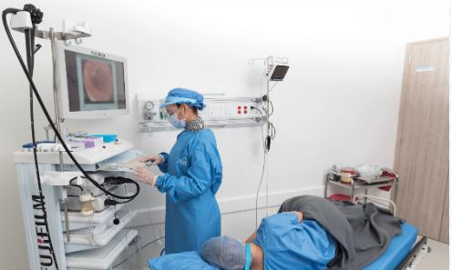

Nuestros Servicios
Citas Gastroenterología
En la especialidad de Gastroenterología tratamos las enfermedades del esófago, estómago, intestino delgado, colon y recto, páncreas, vesícula biliar, conductos biliares e hígado.
Citas Ginecología
En nuestra especialidad de ginecologia se especializa en la atención de las mujeres durante el embarazo y el parto, y en el diagnóstico y tratamiento de enfermedades de los órganos reproductivos femeninos.
Citas Ortopedía y Traumatología
En la especialidad de ortopedia y traumatología puedes acceder al tratamiento del sistema musculoesquelético. Incluye sus huesos, articulaciones, ligamentos, tendones y músculos.